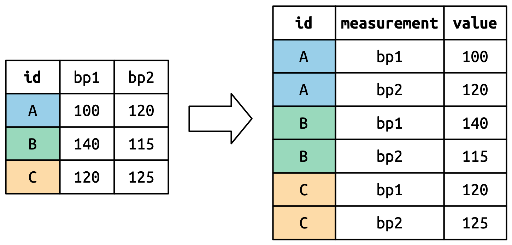

library(tidyverse)
library(janitor)
getwd()
#setwd("~/COMM 605/Tutorial/") # no need to set up if you are opening a RprojectWeek 4 Lab
Data wrangling: import, tidy, and transform

Data wrangling/manipulation is the most important part when we deal with any types of data - before visualization and modeling. We will be mainly following R for Data Science, which includes importing data, transforming data, and “tidying” data.
Understanding data frame
Create a data frame
height <- c(180, 155, 160, 167, 181)
weight <- c(65, 50, 52, 58, 70)
names <- c("Joanna", "Charlotte", "Helen", "Karen", "Amy")
data <- data.frame(height = height, weight = weight, names = names) #stringsAsFactors = TRUE
data
dim(data)
str(data)Positional index
data[1,3] # the first value (1st row ) of the names variable (3th column)
data$names[1]
data[1:2, 2:3] # the first 2 rows and the last 2 columns
data[1:2, ]
data[, 2:3]Ordering data frames
height_order <- data[order(data$height), ]
rownames(height_order) <- 1:nrow(height_order)
height_order
height_order <- data[order(data$height, decreasing = T),]Adding/Removing columns and rows
data2 <- data.frame(state = c("NY", "PA", "MD", "VA", "MA"))
data_newcolumn <- cbind(data, data2)
data_removecolumn <- data_newcolumn[, c(1:2, 4)]
data_newcolumn$state <- NULL
data3 <- data.frame(height = c(120, 150, 132, 122),
weight = c(44, 56, 49, 45),
names = c("Ryan", "Chris", "Ben", "John"))
data_newrow <- rbind(data, data3)
data_removerow <- data_newrow[c(1,6:9),]Merging data frames
Here are two fictitious datasets of a clinical trial. One table contains demographic information of the patients and the other one adverse events recorded throughout the course of the trial.
demographics <- data.frame(
id = c("P1", "P2", "P3"),
age = c(40, 54, 47),
state = c("NY", "MA", "PA"),
stringsAsFactors = FALSE
)
adverse_events <- data.frame(
id = c("P1", "P1", "P3", "P4"),
term = c("Headache", "Neutropenia", "Constipation", "Tachycardia"),
onset_date = c("2020-12-03", "2021-01-03", "2020-11-29", "2021-01-27"),
stringsAsFactors = FALSE
)merge(demographics, adverse_events, by = "id")
merge(demographics, adverse_events, by = "id", all.x = T)
merge(demographics, adverse_events, by = "id", all.y = T)
merge(demographics, adverse_events, by = "id", all = T)adverse_events2 <- adverse_events
colnames(adverse_events2)[1] <- "pat_id"
merge(demographics, adverse_events2, by.x = "id", by.y = "pat_id", all = T)Exercise
Please merge the following two datasets emp_df (employee information)and dept_df (department information) using two ID columns dept_id and dept_branch_id.
emp_df=data.frame(
emp_id=c(1,2,3,4,5,6),
name=c("Chris","Rose","Williams","Jones","Jayden","Xavior"),
superior_emp_id=c(1,1,1,2,2,2),
dept_id=c(10,20,10,10,40,30),
dept_branch_id= c(101,102,101,101,104,103)
)
dept_df=data.frame(
dept_id=c(10,20,30,40),
dept_name=c("Finance","Marketing","Sales","IT"),
dept_branch_id= c(101,102,103,104)
)Show the code
merge(emp_df, dept_df, by = c("dept_id", "dept_branch_id"), all.x = T)Data importing (and exporting)
Common data formats:
- CSV (comma-seperated values) / TSV (tab-seperated values)
- xlsx
- txt
- other softwares/packages: .sav(SPSS), .dta(STATA)
Common data types in R:
- data frame
- tibble (
tbl_df): it does much less than a data frame (a neater data frame), as it never changes the type of the inputs (e.g. it keeps list columns unchanged, and never converts strings to factors), it never changes the names of variables, it only recycles inputs of length 1, and it never createsrow.names().
data <- data.frame(a = 1:26, b = letters[1:26], c = Sys.Date() - 1:26)
data
as_tibble(data)students <- read.csv("https://pos.it/r4ds-students-csv") # from URL
students <- read.csv("data/students.csv") # from local
students
str(students)
summary(students)students <- read.csv("data/students.csv", na.strings=c("N/A", ""))
# students <- read_csv("data/students.csv", na = c("N/A", ""))❓ Question:: What is are the differences between read.csv and read_csv?
Basic data cleaning
str(students)
students %>%
rename(student_id = Student.ID,
full_name = Full.Name,
fav_food = favourite.food)
rename(students,
student_id = Student.ID,
full_name = Full.Name,
fav_food = favourite.food)
students_rename <- students %>%
rename(student_id = Student.ID,
full_name = Full.Name,
fav_food = favourite.food)# a faster way
students_rename <- clean_names(students)
students_rename <- mutate(students_rename, meal_plan = factor(meal_plan))
str(students_rename)students_clean <- students_rename %>%
mutate(age = if_else(age == "five", "5", age))
#students_rename2 <- students_rename
#students_rename2$age <- ifelse(students_rename2$age == "five", 5, students_rename2$age)
#students_rename2$age[students_rename2$age == "five"] <- 5Note: if_else() has three arguments. The first argument test should be a logical vector. The result will contain the value of the second argument, yes, when test is TRUE, and the value of the third argument, no, when it is FALSE. Here we’re saying if age is the character string “five”, make it “5”, and if not leave it as age.
students_clean_final <- students_clean %>%
mutate(group = case_when(
age <= 5 ~ "young",
age > 5 ~ "old",
.default = "other"
))❓ Question: how to use pipe %>% to save some time here?
Show the code
students_clean_final <- students %>%
clean_names() %>%
mutate(meal_plan = factor(meal_plan),
age = parse_number(if_else(age == "five", "5", age)),
group = case_when(
age <= 5 ~ "young",
age > 5 ~ "old",
.default = "other"))write.csv(students_clean_final, "data/students_final.csv", row.names = F)Data tidying
In real life, the social media data you collected is “messy” and “dirty”.
Data Scientists spend up to 80% of the time on data cleaning and 20 percent of their time on actual data analysis. 1
The process of “tidying” data would thus create what’s known as tidy data, as populated by Hadley Wickham (one of the authors of R for Data Science).
Tidy datasets provide a standardized way to link the structure of a dataset (its physical layout) with its semantics (its meaning). 2
Each dataset shows the same values of four variables: country, year, population, and number of documented cases of TB (tuberculosis), but each dataset organizes the values in a different way.
❓ Question: are they the same datasets? Which one is easier to work with and why?
table1# A tibble: 6 × 4
country year cases population
<chr> <dbl> <dbl> <dbl>
1 Afghanistan 1999 745 19987071
2 Afghanistan 2000 2666 20595360
3 Brazil 1999 37737 172006362
4 Brazil 2000 80488 174504898
5 China 1999 212258 1272915272
6 China 2000 213766 1280428583table2# A tibble: 12 × 4
country year type count
<chr> <dbl> <chr> <dbl>
1 Afghanistan 1999 cases 745
2 Afghanistan 1999 population 19987071
3 Afghanistan 2000 cases 2666
4 Afghanistan 2000 population 20595360
5 Brazil 1999 cases 37737
6 Brazil 1999 population 172006362
7 Brazil 2000 cases 80488
8 Brazil 2000 population 174504898
9 China 1999 cases 212258
10 China 1999 population 1272915272
11 China 2000 cases 213766
12 China 2000 population 1280428583table3# A tibble: 6 × 3
country year rate
<chr> <dbl> <chr>
1 Afghanistan 1999 745/19987071
2 Afghanistan 2000 2666/20595360
3 Brazil 1999 37737/172006362
4 Brazil 2000 80488/174504898
5 China 1999 212258/1272915272
6 China 2000 213766/1280428583A tidy data set is:
- Each variable is a column; each column is a variable.
- Each observation is a row; each row is an observation.
- Each value is a cell; each cell is a single value.

Let’s work with the table1 here.
# Compute rate per 10,000
tb_table <- table1 %>%
mutate(rate = cases / population * 10000)tb_year <- table1 %>%
group_by(year) %>%
summarize(total_cases = sum(cases))Exercise
Using table1 to calculate the TB cases per year in each country. (Hint: use mean())
Show the code
table1 %>%
group_by(country) %>%
summarize(mean_cases = mean(cases))Data transformation
Columns and rows
flights is a dataset on flights that departed from New York City in 2013.
#install.packages("nycflights13")
library(nycflights13)
flights
str(flights)# Subseting certain columns
flights_sub <- flights %>%
select(c(month, day, flight, carrier, origin, dest, distance, air_time))
# Creating new columns that are derived from the existing columns
flights_sub <- flights_sub %>%
mutate(speed = distance / air_time * 60)# Filtering certain rows
flights_IAH <- flights %>%
filter(dest == "IAH")
flights_summer <- flights %>%
filter(month == 6 | month == 7 | month == 8) #OR
flights_summer <- flights %>%
filter(month %in% c(6,7,8))
flights_jan1 <- flights %>%
filter(month == 1 & day == 1) #ANDflights %>%
arrange(year, month, day, dep_time)
flights %>%
arrange(desc(dep_delay))flights %>%
distinct(origin, dest, .keep_all = TRUE)flights %>%
group_by(month) %>%
summarize(
mean_delay = mean(dep_delay, na.rm = TRUE),
n = n()
)
daily_flights <- flights %>%
group_by(year, month, day) %>%
summarize(
mean_delay = mean(dep_delay, na.rm = TRUE),
n = n())Exercise
- Using the same
flightsdataset to creat a new dataframeflights_houston, and:
- Only include flights heading to Houston (
IAHandHOU) - Calcuate the speed (\(speed = distance / air\_time * 60\))
- Only keep the columns of “year”, “month”, “day”,“dep_time”, “carrier”, “flight”, and “speed”
- Arrange the data based on the speed with a desceding order.
Show the code
flights_houston <- flights %>%
filter(dest == "IAH" | dest == "HOU") %>%
mutate(speed = distance / air_time * 60) %>%
select(year:day, dep_time, carrier, flight, speed) %>%
arrange(desc(speed))- Using the same
flightsdataset to find out which carrier heading to which airport has the worst average delays?
Show the code
delay_flights <- flights %>%
group_by(carrier, dest) %>%
summarize(
mean_delay = mean(dep_delay, na.rm = TRUE),
n = n())Lengthening and widening data
In reality, you need long-format data much more commonly than wide-format data (such as visualizing in ggplot2 and modeling).
- Wide format data: it has a column for each variable and a long format data. The
billboarddataset records the billboard rank of songs in the year 2000:
billboard- Long format data: it has a column for possible variable types and a column for the values of those variables.
cms_patient_experience, is a dataset from the Centers of Medicare and Medicaid services that collects data about patient experiences:
cms_patient_experiencetidyr provides two functions for pivoting data:
pivot_longer(): it takes wide-format data and turn it into long-format data (meltinreshape2). pivot_wider(): it takes long-format data and turn it into wide-format data (castinreshape2).
billboard %>%
pivot_longer(
cols = starts_with("wk"),
names_to = "week",
values_to = "rank"
)billoard_longer <- billboard %>%
pivot_longer(
cols = starts_with("wk"),
names_to = "week",
values_to = "rank",
values_drop_na = TRUE) %>%
mutate(week = parse_number(week))But in reality, we might need to deal with multiple variables at the same time… Now, let’s take a look at the who2 dataset, the source of table1 that you saw above.
who2This dataset is collected by the World Health Organisation, records information about tuberculosis diagnoses. There are two columns that are already variables and are easy to interpret: country and year. They are followed by 56 columns like “sp_m_014”, “ep_m_4554”, and “rel_m_3544”. Each column name is made up of three pieces separated by “_”. The first piece,“sp/rel/ep”, describes the method used for the diagnosis, the second piece, “m/f” is the gender (coded as a binary variable in this dataset), and the third piece, “014/1524/2534/3544/4554/5564/65” is the age range (“014” represents “0-14”, for example).
who2_long <- who2 %>%
pivot_longer(
cols = !(country:year),
names_to = c("diagnosis", "gender", "age"),
names_sep = "_",
values_to = "count"
)Exercise
The following (wide) dataset shows the number of points scored by various NBA basketball players in different years. Please tranform it to a long format.
nba <- data.frame(player=c('Joel Embiid', 'Luka Doncic', 'Jayson Tatum', 'Trae Young'),
year1=c(28.5, 27.7, 26.4,25.3),
year2=c(30.6, 28.4, 26.9, 28.4),
year3=c(33.1, 32.4, 30.1, 26.2))Show the code
nba_long <- nba %>%
pivot_longer(cols=c('year1', 'year2', 'year3'),
names_to='year',
values_to='points')
nba_longFootnotes
Dasu, T. & Johnson, T. (2003). Exploratory Data Mining and Data Cleaning.↩︎
Wickham, H. (2014). Journal of Statistical Software, 59(10), 1–23. https://doi.org/10.18637/jss.v059.i10↩︎